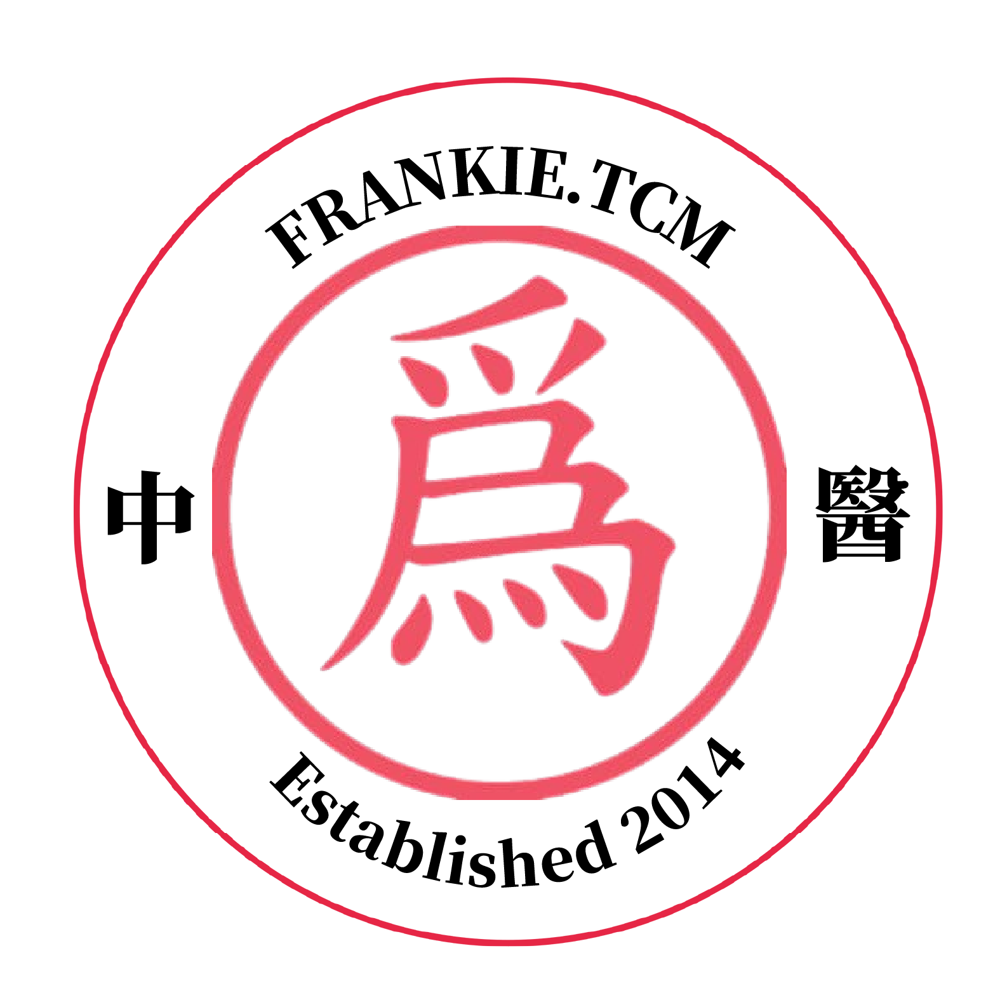
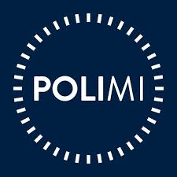

Xuan
Personal Statement
Accomplished Designer with a unique blend of expertise in product design, storytelling, and data analysis, rooted in global exposure and adaptability.
Adept at using data to uncover consumer insights and translate them into strategic, creative outcomes. Combines analytical rigor with design fluency to support business decisions, optimize campaigns, and drive measurable impact across industries from luxury retail to e-commerce.
Experience spans user-centred industrial design for IKEA, exhibition planning and analysis for Prada and Milan Fashion Week, and data visualization projects with Smithsonian, showcasing a talent for transforming complex datasets into compelling, accessible narratives.
Proficient in tools like D3.js, Leaflet.js, Python, R and Adobe Creative Suite, seamlessly integrating technical and creative capabilities to craft engaging, narratives that inspire action.
Adept at using data to uncover consumer insights and translate them into strategic, creative outcomes. Combines analytical rigor with design fluency to support business decisions, optimize campaigns, and drive measurable impact across industries from luxury retail to e-commerce.
Experience spans user-centred industrial design for IKEA, exhibition planning and analysis for Prada and Milan Fashion Week, and data visualization projects with Smithsonian, showcasing a talent for transforming complex datasets into compelling, accessible narratives.
Proficient in tools like D3.js, Leaflet.js, Python, R and Adobe Creative Suite, seamlessly integrating technical and creative capabilities to craft engaging, narratives that inspire action.
Experience
-

Senior Web Designer
Wei's TCMJan 2025 — Present-
Designed 20+ digital campaigns and e-commerce landing pages, using heatmaps and user behavior to guide layout, color, and typography decisions in crafting responsive layouts and branded templates. Created 100+ social and email assets with consistent typography and tone. Managed overseas marketing and product teams across to ensure alignment and timely delivery.
Analyzed user behavior and performance metrics across digital campaigns and landing pages to guide design iterations and content strategy. Collaborated with product and marketing teams to implement data-informed design solutions that improved user engagement by 40%. Conducted A/B tests on navigation flows and CTAs, reducing bounce rates and improving conversion metrics.
-
-

Perfume Analyst
PradaJan 2024 — Jun 2024-
Conducted market, trend, and pricing analysis across 80+ SKUs in the luxury perfume segment. Used consumer research and POS data to identify top-selling profiles by region. Collaborated with marketing and R&D teams to align scent development with data-backed audience insights.
Defined digital user personas and mapped customer journeys to inform the product experience of a fragrance discovery tool. Worked with design and content teams to prototype scent storytelling flows and optimize content hierarchy within the product ecosystem.
Translated consumer research into digital persona profiles, informing user interface direction for online fragrance selectors. Collaborated with cross-functional teams to define product presentation hierarchy and scent storytelling across digital assets.
-
-

Translator - Interpreter
Salone del Mobile . MilanoApr 2024 — Apr 2024-
Provided translation of promotional materials, product presentations, and event-related content, ensuring cultural sensitivity and accuracy, as well as real-time translation and interpretation for clients, exhibitors, and attendees, ensuring seamless communication between English, Chinese, and Italian speakers.
Facilitated over 30 meetings and negotiations, contributing to the successful closing of 7+ international business deals.
-
-
Exhibition Designer
PradaJul 2022 — Apr 2024-
Designed and executed exhibition installations, along with event webpages attracting 30,000+ visitors per event and boosting press coverage. Worked with architects and curators to ensure seamless installation, achieving 98% on-time setups.
Worked closely with curators and strategists to evaluate visitor flow, spatial analytics, and audience interaction across 15+ international exhibitions. Applied visual hierarchy, spatial composition, and brand guidelines to physical installations and digital assets. Collaborated with curators to prototype signage and wayfinding that aligned with the brand’s visual language and improved visitor experience. Used qualitative feedback and traffic reports to iterate on exhibition layouts, improving visitor satisfaction and dwell time. Supported budgeting and vendor selection through comparative cost analysis, achieving a 15% expense reduction.
Designed spatial layouts informed by traffic flow data and visitor behavior, applying UX heuristics to physical space. Conducted usability audits of digital museum guides and interactive kiosks. Collaborated with engineers and curators to prototype navigation systems that increased wayfinding efficiency.
-
-

Teaching Assistant, Industrial Design
Politecnico di MilanoSep 2021 — Jul 2023-
Assisted professors in delivering 40+ lectures and managing 10+ workshops. Supported curriculum on iterative prototyping, usability, and user-centered design methods. Mentored and facilitated critiques, and coordinated course materials to enhance learning and project outcomes across 200+ students with an emphasis on journey mapping, accessibility, problem definition, and design thinking principles.
Collected and organized student performance data to inform curriculum refinement. Helped develop evaluation rubrics and design process metrics, improving workshop structure.
Supported students in developing visual narratives and presentation skills. Led workshops on layout design, visual hierarchy, and typography. Provided critique and visual feedback on design outcomes across formats from posters to interfaces.
-
-

Graphic Design Intern
BreadTalkApr 2017 — Nov 2017-
Designed over 30 product packaging concepts and marketing materials in 6 months, ensuring brand consistency. Collaborated with marketing to create social media content and campaigns, contributing to a 21% boost in online brand awareness and engagement.
-